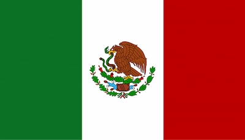

Héctor Miguel Castro Chávez
About Me
Hello, I am Hector and I'm from Mexico. Some of the things I enjoy is learning about new technologies, especially things related with web design and software development. I am constantly expanding my knowledge about the IT field to keep my technological skills sharp.
Mexico City, Mexico

Mexico City (CDMX) was founded on the ruins of the ancient Aztec city of Tenochtitlan. Situated at a high altitude of 2,240 metres above sea level, it is the political and cultural heart of the country. It has a population of over 9 million (22 million in its metropolitan area). Among the most notable places of interest are the historic town centre, Chapultepec Forest, the Museum of Anthropology and the canals of Xochimilco.